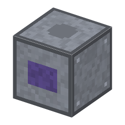

マスクアライナー（密着・近接露光）
Mask Aligner (contact / proximity)・ブロック・Semiconductor
仮（まだ本物どおりでない所がある）
本当の歴史：[9-20] 密着・近接露光（1955年）

説明
①子ども レジストを塗ったウェハーにマスクを重ねて、水銀ランプの光で模様を焼きつける機械。
②学生 鋼×4＋複式顕微鏡＋送りねじ×2＋水銀灯の管＋銅ケーブル。電気 500W・10秒。レジストを塗った板＋フォトマスク → 露光した板。ボタンですき間を切りかえ：密着はくっきりだがマスクが板1枚ごとに傷む（耐久10）、近接 20µm はマスクが傷まないが少しぼける、80µm はぼけすぎて焼けない。上の小さな入口に台のねじ（送りねじかボールねじ）を入れると、2枚目からのマスクを前の層にぴったり合わせられる（重ね合わせ：手 20µm・送りねじ 10µm・ボールねじ 5〜1µm）。
③大人 1955〜57年、ベル研究所のアンドラスとボンド、アメリカ陸軍のラスロップとナルが、写真製版の方法をトランジスタづくりに使った。マスクを板にぴったり押しつけて等倍で焼く「密着露光」から始まった。
④ガチ 密着ではマスクと板がこすれて、ごみや傷が増え、マスクを何回か使うと取りかえた。少し浮かす「近接露光」はマスクが長持ちするが、光が回りこんで（回折）ぼける：ぼけ ≒ √(波長×すき間)。この弱点を両方なくしたのが、レンズで写す投影露光（[7-19]）。